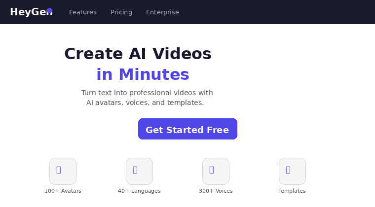
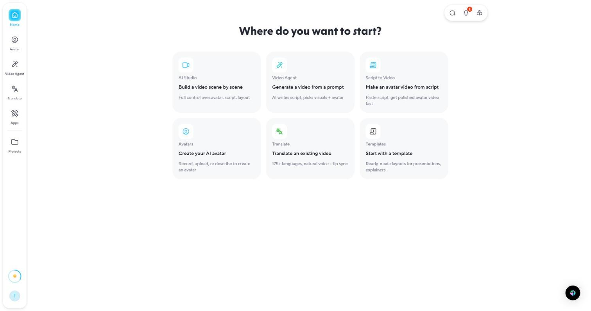
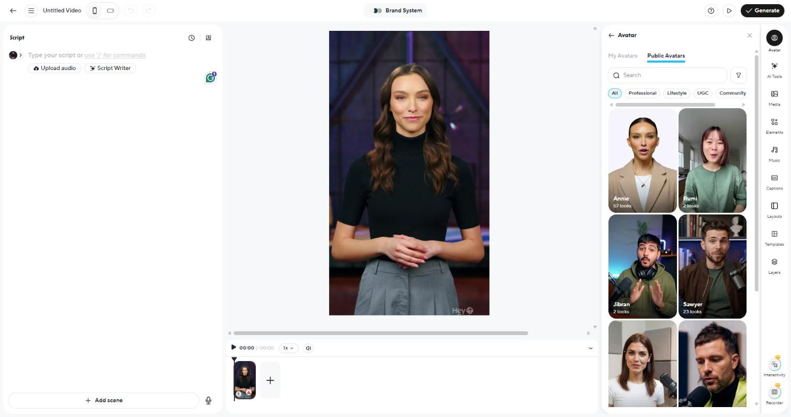
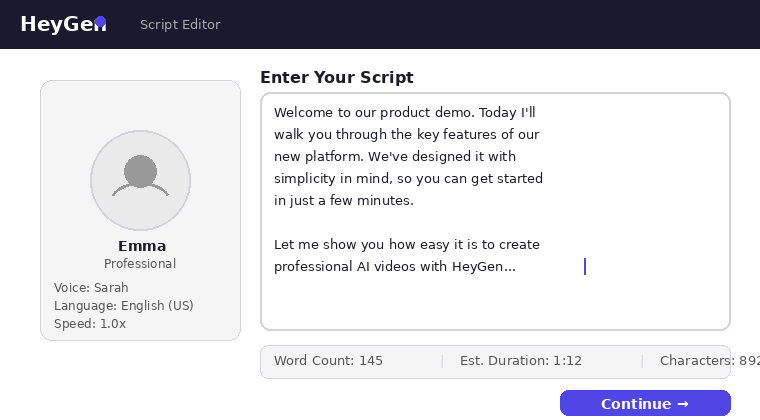
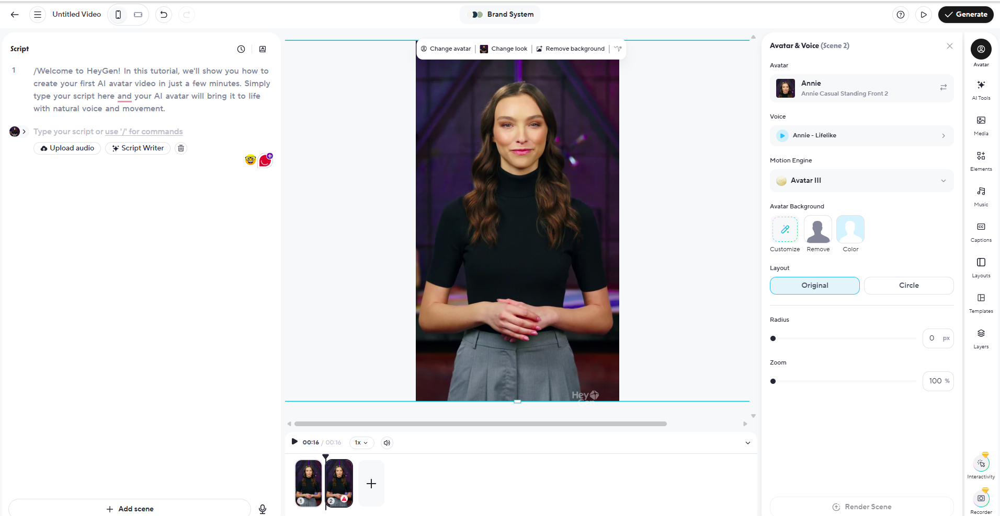
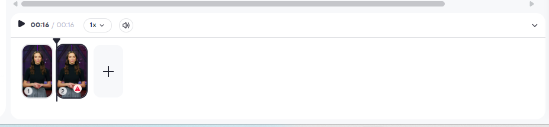
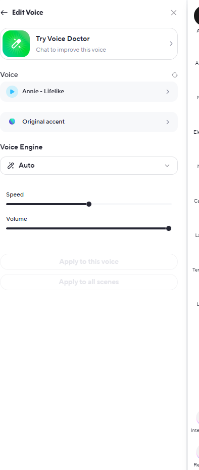
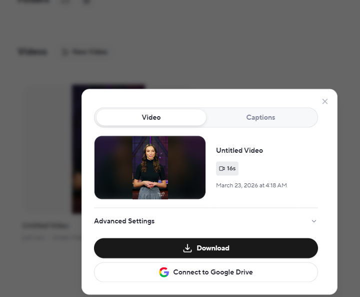

What Is HeyGen and Why Use It?
Creating professional video content used to require expensive cameras, studio lighting, teleprompters, and hours of editing. In 2026, HeyGen has fundamentally changed that equation. It is an AI-powered video creation platform that transforms text scripts into polished, presenter-led videos in minutes rather than days.
HeyGen uses advanced neural rendering to generate realistic AI avatars that speak your script with natural lip-sync, facial expressions, and gestures. Whether you need a product walkthrough, a training module, a social media ad, or a personalized sales pitch, HeyGen lets you produce broadcast-quality video without ever stepping in front of a camera.
In this comprehensive guide, you will learn exactly how to go from a blank canvas to a finished, publish-ready AI video in eight straightforward steps. We cover everything from account setup and avatar selection to scene customization, voice configuration, and final export. By the end, you will have the skills and confidence to produce AI videos that look and sound truly professional. If you want to see how HeyGen stacks up against competitors first, read our full HeyGen review.
This guide is for you if you are:
- A marketer who needs video content at scale without a production budget
- A course creator or trainer building educational materials
- A business owner who wants polished video for your website and social channels
- A content creator exploring AI tools to boost output
- Anyone curious about AI video generation and ready to try it hands-on

What You Need Before You Start
Before diving into the step-by-step process, make sure you have the following ready:
- A HeyGen account — You can start with the free plan to test the platform. The free tier includes 1 credit (enough for one short video) so you can follow along with this tutorial at no cost.
- Your video script — Have a draft script written or at least a clear outline of what your video will cover. Aim for 130–150 words per minute of video.
- Brand assets (optional) — If you want branded videos, have your logo (PNG with transparent background), brand colors (hex codes), and any background images ready to upload.
- A modern web browser — HeyGen runs entirely in the browser. Chrome, Edge, or Firefox work best. No software installation required.
Get Started with HeyGen Today
Create your free account and follow along with this tutorial. No credit card required for the free plan.
Try HeyGen Free →Step 1: Sign Up and Navigate the Dashboard
Head to HeyGen's website and click the sign-up button. You can register with your email address or sign in with your Google account for a quicker setup. No credit card is required for the free tier.
Once inside, you will land on the HeyGen Dashboard. Take a moment to orient yourself with the main areas:
- Home — Your recent projects, templates, and quick-start options
- Templates — Pre-built video templates organized by category (marketing, education, social media, e-commerce)
- Avatars — The full library of AI presenters you can use
- Brand Kit — Upload your logo, fonts, and color palette for consistent branding across all videos
- Videos — Your rendered and in-progress projects
To create your first video, click the prominent "Create Video" button. You will be asked to choose between starting from a template or building from scratch. For this tutorial, select "Start from Scratch" so you learn the full process.

Step 2: Choose Your AI Avatar
The avatar is the virtual presenter who will deliver your script on camera. HeyGen offers two main options:
Stock Avatars
HeyGen provides a library of 200+ pre-built avatars spanning different ages, ethnicities, professional styles, and settings. Each avatar comes in multiple poses: talking head, half-body, or full-body. You can filter by gender, age range, and style to find the right fit for your brand.
When selecting a stock avatar, consider your audience. A young, casual avatar works well for social media content, while a suited professional may be better for corporate training or investor updates.
Custom Avatars
On paid plans, you can create a custom avatar from your own footage. Record a 2–5 minute video of yourself (or a consenting team member) following HeyGen's recording guidelines, upload it, and HeyGen will generate a digital clone. This is incredibly powerful for personal brands, CEO messages, and recurring content series where consistency matters.

Step 3: Write or Paste Your Script
With your avatar selected, you will see the script editor on the right side of the video workspace. This is where you type or paste the text your avatar will speak.
Follow these scripting best practices for the most natural-sounding result:
- Keep sentences short. Aim for 15–20 words per sentence. Long, complex sentences can sound unnatural when spoken by an AI voice.
- Use punctuation strategically. Commas create brief pauses. Periods create full stops. Ellipses (...) add dramatic pauses.
- Write for the ear, not the eye. Read your script aloud before pasting it in. If it sounds awkward spoken, it will sound awkward in the video.
- Include pronunciation guides. For unusual proper nouns or technical terms, use phonetic spelling in parentheses. HeyGen also offers a pronunciation dictionary in Settings.
- Target 130–150 words per minute. This is the natural speaking pace that audiences find comfortable.
The editor shows a real-time word count and estimated video duration, helping you keep your content tight and focused. For a two-minute video, aim for approximately 260–300 words per scene.

Step 4: Customize the Scene
Now it is time to make your video visually compelling. The scene editor lets you control everything around your avatar:
Backgrounds
Choose from HeyGen's built-in backgrounds (office settings, abstract gradients, outdoor scenes) or upload your own custom image or video background. For branded content, a clean solid color matching your brand palette often works best.
Text Overlays
Add titles, bullet points, or lower-thirds to reinforce key messages. HeyGen provides styled text templates that you can customize with your brand fonts and colors. Position text carefully so it does not overlap with your avatar.
Brand Elements
Upload your logo and position it in a corner for consistent branding. If you have set up a Brand Kit, your colors and logo are available with one click.
Media Inserts
You can add images, charts, or short video clips alongside your avatar. This is particularly useful for product demos, data presentations, or showing screenshots while the avatar explains a concept.

Step 5: Add Multiple Scenes for Longer Videos
Most professional videos benefit from multiple scenes. Think of scenes as slides in a presentation — each one covers a distinct topic or visual setup.
Click the "+ Add Scene" button at the bottom of the timeline to create a new scene. Each scene can have:
- A different avatar (or the same one in a new pose)
- A different background
- Its own script segment
- Unique text overlays and media
For a typical 3–5 minute explainer video, aim for 4–8 scenes. This keeps the visual presentation dynamic and holds viewer attention longer than a single static shot. HeyGen handles transitions between scenes automatically with smooth crossfades.
You can reorder scenes by dragging them in the timeline, duplicate scenes to reuse layouts, and delete scenes you no longer need. This flexible structure makes it easy to iterate on your video without starting over.

Step 6: Select Voice and Language
HeyGen offers 300+ AI voices across 40+ languages, making it one of the most versatile platforms for multilingual content. Here is how to configure the voice for your video:
- Browse voices by language, gender, and style (professional, friendly, narrative, energetic)
- Preview before committing — Click the play button next to any voice to hear a sample with your actual script text
- Adjust speed — Use the speed slider to make the narration slightly faster or slower. Most professional content works best at 1.0x to 1.1x speed
- Fine-tune pauses — Insert pause markers in your script for emphasis at critical points
If you have a paid plan, you can also create a voice clone from an audio sample. Upload 3+ minutes of clear speech, and HeyGen will generate a synthetic version of that voice for use across all your videos. This is a game-changer for personal brands and executives who want their own voice without recording every video.

Step 7: Preview and Render
Before committing credits to a full render, always use the preview function. HeyGen generates a quick low-resolution preview that lets you check:
- Lip-sync accuracy — Does the avatar's mouth movement match the audio naturally?
- Pacing and timing — Does the script flow well? Are there awkward pauses or rushed sections?
- Visual layout — Are text overlays readable? Is the logo positioned correctly? Does the background complement the avatar?
- Scene transitions — Do the scenes flow logically from one to the next?
If anything needs adjustment, go back to the relevant scene and make changes. You can preview as many times as needed without using credits.
When you are satisfied, click "Submit" to start the full render. Select your preferred resolution (1080p for most use cases, 4K for presentations on large screens). Rendering typically takes 5–15 minutes depending on video length and server load. You will receive an email notification when your video is ready.

Step 8: Download and Publish
Once rendering is complete, your video appears in the Videos section of your dashboard. From here, you have several options:
- Download — Save the MP4 file to your computer in your selected resolution
- Share link — Generate a shareable URL that anyone can view without downloading
- Embed code — Get an iframe embed code for your website or landing page
- Direct publish — Connect your YouTube, TikTok, or social media accounts and publish directly from HeyGen
For the best results on social platforms, consider these export tips:
- YouTube / Website: 1080p landscape (16:9) — the standard format
- Instagram Reels / TikTok: 1080p portrait (9:16) — set this in scene settings before rendering
- LinkedIn / Twitter: 1080p square (1:1) works well in feeds

Ready to Create Your First AI Video?
Follow this tutorial hands-on with a free HeyGen account. Create your first video in under 30 minutes.
Start Creating with HeyGen →5 Pro Tips for Better AI Videos
After creating hundreds of AI videos, here are the techniques that consistently produce the best results:
- Batch-produce content. Write 5–10 scripts in one sitting, then create all videos in a single session. You will develop a rhythm and produce more consistent content than making one video at a time.
- Use the first 3 seconds wisely. Social media algorithms prioritize watch time. Start with a bold statement, surprising statistic, or direct question — never a generic greeting. "Did you know 73% of buyers prefer video?" beats "Hi, welcome to our channel."
- Match avatar energy to content type. Use an energetic, casual avatar for social media content. Choose a calm, authoritative presenter for training and educational material. The mismatch between avatar tone and content purpose is the most common mistake new users make.
- Layer in post-production. While HeyGen handles the heavy lifting, importing your video into a free editor like CapCut or DaVinci Resolve for final touches (music, sound effects, motion graphics) elevates the end product significantly.
- A/B test thumbnails and hooks. Create two versions of your intro scene with different opening lines. Publish both and see which gets better engagement. HeyGen's fast rendering makes split-testing painless.
Use Cases: What Can You Create with HeyGen?
Marketing and Advertising
Create product explainer videos, social media ads, and landing page videos without hiring a production team. Companies report producing video ads in 90% less time compared to traditional shoots. Translate a single ad into 40+ languages to reach global markets from one script.
Training and Onboarding
Build standardized training modules that every employee sees in the same quality, regardless of when or where they join. Update training content by changing the script text rather than re-filming. This is particularly valuable for compliance training that requires annual updates. For a deeper look at this workflow, see our guide on using AI for training and onboarding videos.
Social Media Content
Maintain a consistent posting schedule across YouTube, TikTok, Instagram, and LinkedIn without spending hours in front of a camera each week. Create a month's worth of short-form video content in a single afternoon. For more platform-specific strategies, see our guide on AI tools for YouTube creators.
Sales Outreach
Send personalized video messages to prospects at scale. Using HeyGen's API, you can dynamically insert prospect names and company details into templated videos, creating the feel of a personal recording with the efficiency of automation.
Scale Your Video Production with AI
Join 500,000+ creators and businesses already using HeyGen to produce professional video content.
Explore HeyGen Plans →Pricing Quick Reference (2026)
HeyGen offers flexible plans to match different production needs. Here is a quick comparison:
| Plan | Price | Credits/Month | Key Features |
|---|---|---|---|
| Free | $0 | 1 credit | Basic avatars, 720p export, watermark |
| Creator | $24/mo | 15 credits | Premium avatars, 1080p, no watermark, brand kit |
| Business | $72/mo | 30 credits | Custom avatars, 4K, priority rendering, API access |
| Enterprise | Custom | Unlimited | SSO, dedicated support, SLA, custom integrations |
Prices reflect publicly listed rates as of March 2026. Visit HeyGen's pricing page for the most current information and any active promotions. For a side-by-side look at how HeyGen's pricing stacks up, see our best AI video tools roundup.
Troubleshooting Common Issues
Issue: Lip-sync looks slightly off.
Fix: This usually occurs with very long sentences or uncommon words. Break long sentences into shorter ones using periods or commas. For tricky words, try phonetic alternatives or add them to HeyGen's pronunciation dictionary in Settings.
Issue: Video rendering is stuck or taking too long.
Fix: Rendering times vary based on server load. If your video has been processing for more than 30 minutes, try refreshing the page and checking the Videos section. If the issue persists, contact HeyGen support via the in-app chat. Business plan users get priority queue access.
Issue: Uploaded background image looks blurry.
Fix: Ensure your background image is at least 1920x1080 pixels for landscape videos or 1080x1920 for portrait. Use PNG or high-quality JPEG formats. Avoid images smaller than your output resolution.
Issue: The avatar's gestures do not match the content.
Fix: Some avatars have more expressive gesture libraries than others. Try switching to a different avatar from the same category. Also, adding emphasis punctuation (exclamation marks, question marks) can influence gesture generation.
Issue: Audio quality sounds robotic or unnatural.
Fix: Switch to a different voice in the same language. HeyGen's newer voice models (marked with a star icon) use the latest synthesis technology and sound significantly more natural. Also ensure your script uses conversational language rather than formal or technical jargon.
Frequently Asked Questions
HeyGen offers a free plan with 1 credit (approximately one 1-minute video) so you can test the platform. Paid plans start at $24/month for the Creator plan, which includes 15 credits per month and access to premium avatars. The Business plan at $72/month provides 30 credits and additional features like brand kits and priority rendering.
HeyGen's avatars are among the most realistic in the industry. Their latest generation uses advanced neural rendering for natural lip-sync, facial expressions, and head movements. Custom avatars created from your own footage are particularly convincing. Most viewers cannot distinguish HeyGen videos from traditionally filmed content at first glance.
Yes, HeyGen supports over 40 languages including Spanish, French, German, Chinese, Japanese, Arabic, Hindi, and many more. You can write your script in any supported language, and the AI avatar will speak with natural pronunciation and lip-sync matched to that language. This makes HeyGen ideal for creating multilingual marketing and training content.
Rendering time depends on your video length and current server load. A typical 1–2 minute video renders in approximately 5–10 minutes. Longer videos with multiple scenes may take 15–30 minutes. Business and Enterprise plan users get priority rendering, which can reduce wait times by up to 50%.
Yes, all paid plans include commercial usage rights. You can use HeyGen-generated videos for marketing campaigns, product demos, social media ads, client presentations, and training materials. The Enterprise plan offers additional rights for broadcast and large-scale distribution. Always review the terms of service for the most current licensing details.
Conclusion
HeyGen has made professional video production accessible to everyone, regardless of budget or technical skill. In the eight steps covered in this guide, you have learned how to go from zero to a polished, ready-to-publish AI video. The key takeaway is this: start simple, iterate quickly, and let the AI handle the production work while you focus on the message.
The businesses and creators who thrive with AI video tools are the ones who treat them as an accelerator, not a replacement for good storytelling. Write compelling scripts, choose avatars that match your brand personality, and use the customization tools to make every video feel intentional and on-brand. To see how HeyGen compares to alternatives like Synthesia and Pictory, check out our three-way comparison.
Whether you are creating your first explainer video or scaling to dozens of multilingual campaigns, HeyGen gives you the tools to produce content that would have required a full production team just a few years ago. The best way to learn is by doing, so open HeyGen and create your first video today.
Start Creating Professional AI Videos Now
Sign up for free and create your first HeyGen video in under 30 minutes. No camera, no studio, no editing skills required.
Get Started with HeyGen →